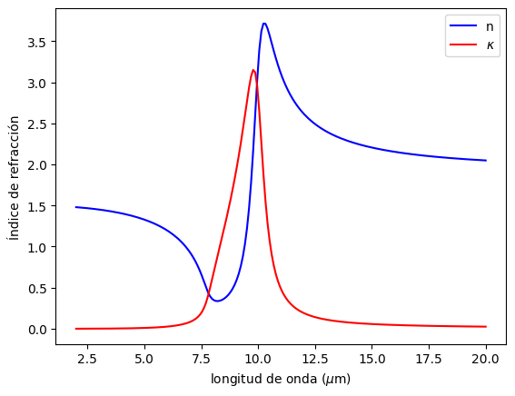
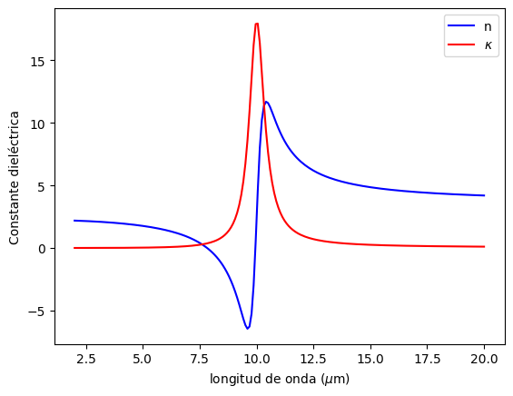
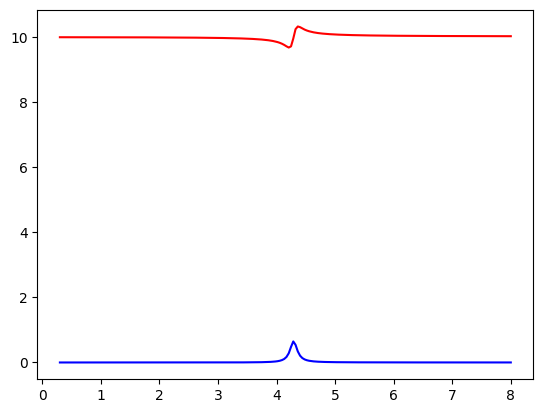
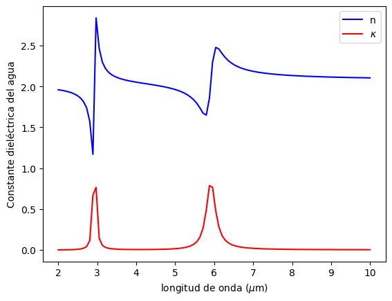
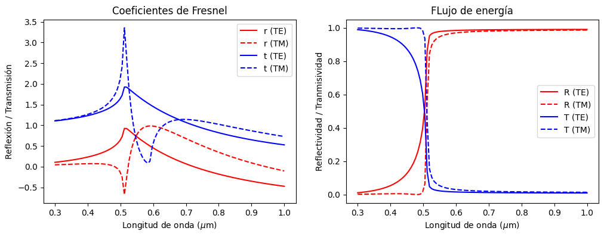
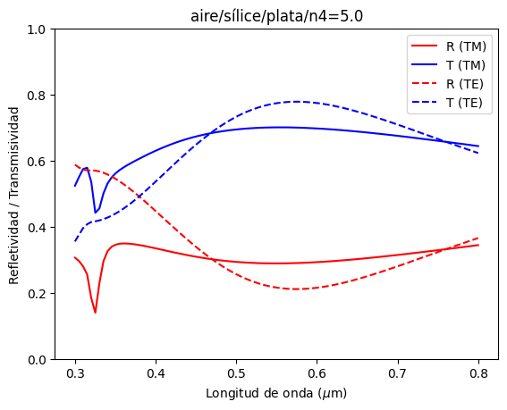
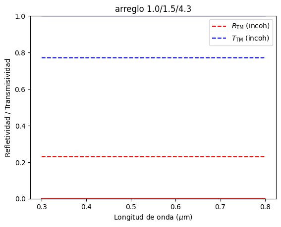
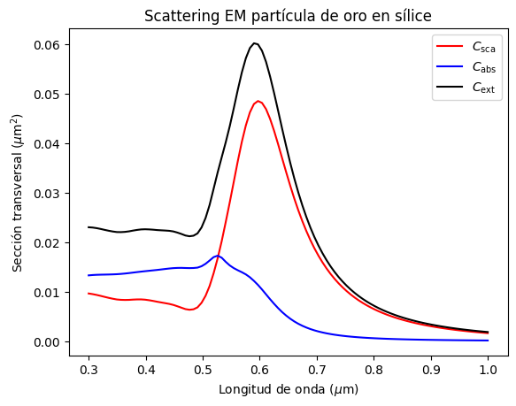
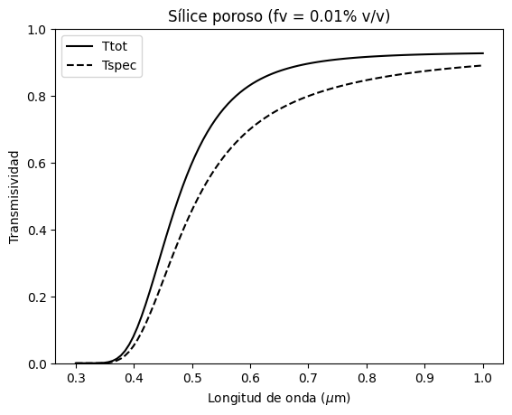
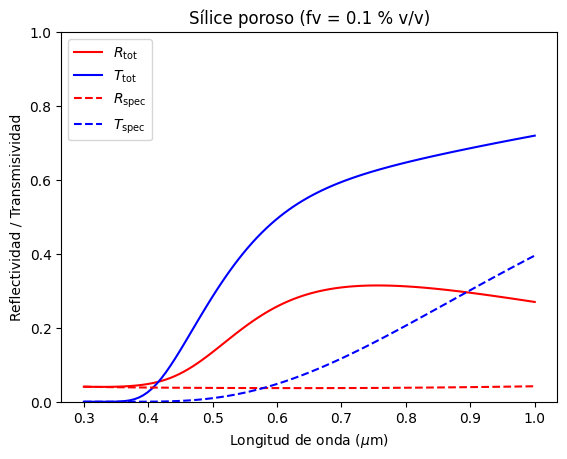

Tutorial 1 - Modelos ópticos#
Este es un tutorial para utilizar las principales librerías del paquete empylib. Estas son:
Funciones básicas en
empylib.nklibpara estimación de índices de refracción.waveopticspara cálculo de propiedades de reflectancia y transmitancia de ondas electromagnéticas.miescatteringpara cálculo scattering y absorción de luzrad_transferpara simulaciones de transferencia de energía radiativa.
Primero, importamos los paquetes estandar de numpy y matplotlib
import numpy as np
import matplotlib.pyplot as plt
Conversión de unidades#
import empylib as em
La librería empylib cuenta con la función convert_units(x, x_in, to) para convertir unidades. Los parámetros de entrada son:
x: lista de valores a convertir (formato ndarray)x_in: unidad de la lista de valores (formato string)to: unidad a convertir (formato string)
La función retorna la lista de valores en x convertido a la unidad to.
Como opciones, la función permite convertir las siguientes unidades:
Nanometros (\(\lambda\)) :
'nm'Micrometros (\(\lambda\)) :
'um'Centímetros recíprocos :
'cm^-1'Frecuencia (\(\nu\)) :
'Hz'Frecuencia angular (\(\omega\)) :
'rad/s'Electron volts (\(E_{\hbar\omega}\)) :
'eV'
Por ejemplo, realicemos la conversión del espectro \(\lambda \in [0.3,1.0]\) \(\mu\)m considerando 8 puntos igualmente espaciados, a unidades de eV.
lam = np.linspace(0.3,1.0,8) # espectro de longitudes de onda en um
print('longitudes de onda en um:\n', lam)
lam_in_eV = em.convert_units(lam,'um','eV') # convertimos lam a unidades de eV
print('longitudes de onda en eV:\n', lam_in_eV)
longitudes de onda en um:
[ 0.3 0.4 0.5 0.6 0.7 0.8 0.9 1. ]
longitudes de onda en eV:
[ 4.13280655 3.09960491 2.47968393 2.06640327 1.77120281 1.54980245
1.37760218 1.23984196]
# revertimos el proceso para recuperar las longitudes de onda en um
lam_in_um = em.convert_units(lam_in_eV,'eV','um') # convertimos lam a unidades de eVicrones
print('longitudes de onda en um:\n', lam_in_um)
longitudes de onda en um:
[ 0.3 0.4 0.5 0.6 0.7 0.8 0.9 1. ]
Índices de refracción (nklib)#
import empylib.nklib as nk
Índices de refracción tabulados#
La librería empylib.nklib contiene una serie de funciones para determinar el coeficiente de refracción complejo, \(N = n + i\kappa\).
Entre la lista de materiales disponibles tenemos:
Agua (
H2O)Oro (
gold)Plata (
silver)Cobre (
Cu)Aluminio (
Al)Silice (
SiO2)Silicio (
Si)Dióxido de Titanio (
TiO2)
Para utilizar las funciones debemos, primero, generar un arreglo con las longitudes de onda que deseamos graficar, y luego evaluar la función para determinar el índice de refracción.
Por ejemplo, supongamos que necesitamos el índice de refracción del sílice en el espectro \(\lambda\in[0.5,20]\) \(\mu\)m.
lam = np.linspace(0.5,20,100) # arreglo de 100 datos entre 0.5 y 5.0 micrones
N = nk.SiO2(lam) # índice de refracción del sílice
# graficamos el índice de refracción
plt.plot(lam, N.real,'-b', label = 'n')
plt.plot(lam, N.imag,'-r', label = '$\kappa$')
plt.xlabel('longitud de onda ($\mu$m)')
plt.ylabel('Índice de refracción')
plt.legend()
plt.show()
---------------------------------------------------------------------------
gaierror Traceback (most recent call last)
File ~/miniconda3/lib/python3.11/site-packages/urllib3/connection.py:174, in HTTPConnection._new_conn(self)
173 try:
--> 174 conn = connection.create_connection(
175 (self._dns_host, self.port), self.timeout, **extra_kw
176 )
178 except SocketTimeout:
File ~/miniconda3/lib/python3.11/site-packages/urllib3/util/connection.py:72, in create_connection(address, timeout, source_address, socket_options)
68 return six.raise_from(
69 LocationParseError(u"'%s', label empty or too long" % host), None
70 )
---> 72 for res in socket.getaddrinfo(host, port, family, socket.SOCK_STREAM):
73 af, socktype, proto, canonname, sa = res
File ~/miniconda3/lib/python3.11/socket.py:962, in getaddrinfo(host, port, family, type, proto, flags)
961 addrlist = []
--> 962 for res in _socket.getaddrinfo(host, port, family, type, proto, flags):
963 af, socktype, proto, canonname, sa = res
gaierror: [Errno -3] Temporary failure in name resolution
During handling of the above exception, another exception occurred:
NewConnectionError Traceback (most recent call last)
File ~/miniconda3/lib/python3.11/site-packages/urllib3/connectionpool.py:716, in HTTPConnectionPool.urlopen(self, method, url, body, headers, retries, redirect, assert_same_host, timeout, pool_timeout, release_conn, chunked, body_pos, **response_kw)
715 # Make the request on the httplib connection object.
--> 716 httplib_response = self._make_request(
717 conn,
718 method,
719 url,
720 timeout=timeout_obj,
721 body=body,
722 headers=headers,
723 chunked=chunked,
724 )
726 # If we're going to release the connection in ``finally:``, then
727 # the response doesn't need to know about the connection. Otherwise
728 # it will also try to release it and we'll have a double-release
729 # mess.
File ~/miniconda3/lib/python3.11/site-packages/urllib3/connectionpool.py:404, in HTTPConnectionPool._make_request(self, conn, method, url, timeout, chunked, **httplib_request_kw)
403 try:
--> 404 self._validate_conn(conn)
405 except (SocketTimeout, BaseSSLError) as e:
406 # Py2 raises this as a BaseSSLError, Py3 raises it as socket timeout.
File ~/miniconda3/lib/python3.11/site-packages/urllib3/connectionpool.py:1061, in HTTPSConnectionPool._validate_conn(self, conn)
1060 if not getattr(conn, "sock", None): # AppEngine might not have `.sock`
-> 1061 conn.connect()
1063 if not conn.is_verified:
File ~/miniconda3/lib/python3.11/site-packages/urllib3/connection.py:363, in HTTPSConnection.connect(self)
361 def connect(self):
362 # Add certificate verification
--> 363 self.sock = conn = self._new_conn()
364 hostname = self.host
File ~/miniconda3/lib/python3.11/site-packages/urllib3/connection.py:186, in HTTPConnection._new_conn(self)
185 except SocketError as e:
--> 186 raise NewConnectionError(
187 self, "Failed to establish a new connection: %s" % e
188 )
190 return conn
NewConnectionError: <urllib3.connection.HTTPSConnection object at 0x7efbe956d010>: Failed to establish a new connection: [Errno -3] Temporary failure in name resolution
During handling of the above exception, another exception occurred:
MaxRetryError Traceback (most recent call last)
File ~/miniconda3/lib/python3.11/site-packages/requests/adapters.py:486, in HTTPAdapter.send(self, request, stream, timeout, verify, cert, proxies)
485 try:
--> 486 resp = conn.urlopen(
487 method=request.method,
488 url=url,
489 body=request.body,
490 headers=request.headers,
491 redirect=False,
492 assert_same_host=False,
493 preload_content=False,
494 decode_content=False,
495 retries=self.max_retries,
496 timeout=timeout,
497 chunked=chunked,
498 )
500 except (ProtocolError, OSError) as err:
File ~/miniconda3/lib/python3.11/site-packages/urllib3/connectionpool.py:802, in HTTPConnectionPool.urlopen(self, method, url, body, headers, retries, redirect, assert_same_host, timeout, pool_timeout, release_conn, chunked, body_pos, **response_kw)
800 e = ProtocolError("Connection aborted.", e)
--> 802 retries = retries.increment(
803 method, url, error=e, _pool=self, _stacktrace=sys.exc_info()[2]
804 )
805 retries.sleep()
File ~/miniconda3/lib/python3.11/site-packages/urllib3/util/retry.py:594, in Retry.increment(self, method, url, response, error, _pool, _stacktrace)
593 if new_retry.is_exhausted():
--> 594 raise MaxRetryError(_pool, url, error or ResponseError(cause))
596 log.debug("Incremented Retry for (url='%s'): %r", url, new_retry)
MaxRetryError: HTTPSConnectionPool(host='refractiveindex.info', port=443): Max retries exceeded with url: /database/data/main/SiO2/nk/Franta-25C.yml (Caused by NewConnectionError('<urllib3.connection.HTTPSConnection object at 0x7efbe956d010>: Failed to establish a new connection: [Errno -3] Temporary failure in name resolution'))
During handling of the above exception, another exception occurred:
ConnectionError Traceback (most recent call last)
Cell In[7], line 2
1 lam = np.linspace(0.5,20,100) # arreglo de 100 datos entre 0.5 y 5.0 micrones
----> 2 N = nk.SiO2(lam) # índice de refracción del sílice
4 # graficamos el índice de refracción
5 plt.plot(lam, N.real,'-b', label = 'n')
File /mnt/c/Users/frami/OneDrive - Universidad Adolfo Ibanez/ComputerCodes/Python/custom_packages/empylib_proy/empylib/nklib.py:2148, in <lambda>(wavelength)
2138 '''
2139 --------------------------------------------------------------------
2140 Target functions
2141 --------------------------------------------------------------------
2142 '''
2144 #------------------------------------------------------------------------------
2145 # Inorganic
2146 # refractive index of SiO2 (quartz)
2147 # SiO2 = lambda wavelength: get_nkfile(wavelength, 'sio2_Palik_Lemarchand2013', get_from_local_path = True)[0]
-> 2148 SiO2 = lambda wavelength: get_ri_info(wavelength, 'main', 'SiO2', 'Franta-25C')[0]
2150 # refractive index of Fused silica
2151 Silica = lambda wavelength: get_ri_info(wavelength, 'main', 'SiO2', 'Franta')[0]
File /mnt/c/Users/frami/OneDrive - Universidad Adolfo Ibanez/ComputerCodes/Python/custom_packages/empylib_proy/empylib/nklib.py:222, in get_ri_info(wavelength, shelf, book, page, extrapolate)
197 def get_ri_info(wavelength, shelf, book, page, *, extrapolate='flat'):
198 '''
199 Extract refractive index from refractiveindex.info database. This code
200 uses the refidx package from Bejamin Vial (https://gitlab.com/benvial/refidx)
(...)
220 Original tabulated data from file
221 '''
--> 222 nk_df = ri_info_data(shelf,book,page)
223 MaterialName = book + '_' + page
225 return _process_nk_data(wavelength, nk_df, MaterialName, extrapolate)
File /mnt/c/Users/frami/OneDrive - Universidad Adolfo Ibanez/ComputerCodes/Python/custom_packages/empylib_proy/empylib/nklib.py:181, in ri_info_data(shelf, book, page)
178 url = url_root + shelf + '/' + book + '/nk/' + page + '.yml'
180 # Download YAML content
--> 181 response = _requests.get(url)
182 response.raise_for_status()
184 # Parse YAML content
File ~/miniconda3/lib/python3.11/site-packages/requests/api.py:73, in get(url, params, **kwargs)
62 def get(url, params=None, **kwargs):
63 r"""Sends a GET request.
64
65 :param url: URL for the new :class:`Request` object.
(...)
70 :rtype: requests.Response
71 """
---> 73 return request("get", url, params=params, **kwargs)
File ~/miniconda3/lib/python3.11/site-packages/requests/api.py:59, in request(method, url, **kwargs)
55 # By using the 'with' statement we are sure the session is closed, thus we
56 # avoid leaving sockets open which can trigger a ResourceWarning in some
57 # cases, and look like a memory leak in others.
58 with sessions.Session() as session:
---> 59 return session.request(method=method, url=url, **kwargs)
File ~/miniconda3/lib/python3.11/site-packages/requests/sessions.py:589, in Session.request(self, method, url, params, data, headers, cookies, files, auth, timeout, allow_redirects, proxies, hooks, stream, verify, cert, json)
584 send_kwargs = {
585 "timeout": timeout,
586 "allow_redirects": allow_redirects,
587 }
588 send_kwargs.update(settings)
--> 589 resp = self.send(prep, **send_kwargs)
591 return resp
File ~/miniconda3/lib/python3.11/site-packages/requests/sessions.py:703, in Session.send(self, request, **kwargs)
700 start = preferred_clock()
702 # Send the request
--> 703 r = adapter.send(request, **kwargs)
705 # Total elapsed time of the request (approximately)
706 elapsed = preferred_clock() - start
File ~/miniconda3/lib/python3.11/site-packages/requests/adapters.py:519, in HTTPAdapter.send(self, request, stream, timeout, verify, cert, proxies)
515 if isinstance(e.reason, _SSLError):
516 # This branch is for urllib3 v1.22 and later.
517 raise SSLError(e, request=request)
--> 519 raise ConnectionError(e, request=request)
521 except ClosedPoolError as e:
522 raise ConnectionError(e, request=request)
ConnectionError: HTTPSConnectionPool(host='refractiveindex.info', port=443): Max retries exceeded with url: /database/data/main/SiO2/nk/Franta-25C.yml (Caused by NewConnectionError('<urllib3.connection.HTTPSConnection object at 0x7efbe956d010>: Failed to establish a new connection: [Errno -3] Temporary failure in name resolution'))
También podemos extraer un valor puntual, para una longitud de onda específica. Por ejemplo, si necesitamos el índice de refracción del aluminio en \(\lambda = 0.5\) \(\mu\)m, hacemos:
lam0 = 0.5
nk.Al(lam0)
(0.8125653662219986+6.048056732947395j)
Modelos de Drude y Lorentz#
La librería empylib.nklib también posee funciones para determinar el índice de refracción a partir de modelos de Drude y Lorentz.
Notar que estas funciones entregan el índice de refracción. Para esto, cada función toma el modelo de Drude o Lorentz para determinar la constante dieléctrica \(\varepsilon\), según lo visto en clases. Luego el índice de refracción se determina a partir de \(\sqrt{\varepsilon}\)
Cada modelo requiere una serie de parámetros. Podemos verificar los parámetros requeridos mediante la función help.
help(nk.lorentz)
Help on function lorentz in module empylib.nklib:
lorentz(wavelength, epsinf, wp, wn, gamma)
Refractive index from Lorentz model
Parameters
----------
epsinf : float
dielectric constant at infinity.
wp : float
Plasma frequency, in eV (wp^2 = Nq^2/eps0 m).
wn : float
Natural frequency in eV
gamma : float
Decay rate in eV
wavelength : linear _np.array
wavelength spectrum in um
Returns
-------
complex refractive index
Como vemos la función lorentz requiere los parámetros \(\omega_p\), \(\omega_n\) y \(\Gamma\) en unidades de eV, además de \(\varepsilon_\infty\). Por último, la función también requiere el espectro de longitudes de onda en unidades de micrones (um) a partir de la variable lam.
En el siguiente ejemplo, graficaremos el modelo de Lorentz para \(\lambda\in[2,20]\) \(\mu\)m, considerando los siguientes parámetros:
\(\omega_n = 0.124\) eV (\(\approx 10\) \(\mu\)m)
\(\omega_p = 0.150\) eV
\(\Gamma = 0.01\) eV
\(\varepsilon_\infty = 2.25\)
Índice de refracción según modelo de Lorentz
lam = np.linspace(2,20,200) # arreglo de 100 datos entre 0.5 y 5.0 micrones
wn = 0.124 # Frecuencia natural (eV)
wp = 0.150 # Frecuencia wp (eV)
T = 0.01 # Taza de decaimiento (eV)
eps0 = 2.25
Nlorentz = nk.lorentz(lam, eps0, wp, wn, T) # índice de refracción modelo de Lorentz
# graficamos el índice de refracción
plt.plot(lam, Nlorentz.real,'-b', label = 'n')
plt.plot(lam, Nlorentz.imag,'-r', label = '$\kappa$')
plt.xlabel('longitud de onda ($\mu$m)')
plt.ylabel('Índice de refracción')
plt.legend()
plt.show()

Constante dieléctrica según modelo de Lorentz
eps_lorentz = Nlorentz**2
# graficamos el índice de refracción
plt.plot(lam, eps_lorentz.real,'-b', label = 'n')
plt.plot(lam, eps_lorentz.imag,'-r', label = '$\kappa$')
plt.xlabel('longitud de onda ($\mu$m)')
plt.ylabel('Constante dieléctrica')
plt.legend()
plt.show()

lam = np.linspace(0.3,8,200) # arreglo de 100 datos entre 0.5 y 5.0 micrones
eps0=10
wn = 0.289 # Frecuencia natural (eV)
wp = 0.15*wn # Frecuencia wp (eV)
T = 0.01 # Taza de decaimiento (eV)
nkco2 = nk.lorentz(lam, eps0, wp, wn, T)
epsco2 = nkco2**2
plt.plot(lam, epsco2.real,'r')
plt.plot(lam, epsco2.imag,'b')
plt.show()

Constante dieléctrica del agua modelo de Lorentz
Ahora, generemos la constante dieléctrica del agua a partir del modelo de Lorentz.
En el caso del agua, tenemos dos modos de vibración (referencia). Así, el modelo de Lorentz es:
donde \(\omega_{n_1}\) y \(\omega_{n_2}\) son las frecuencias naturales de los modos de vibración.
Como aproximación consideramos:
\(\Gamma = 0.01\) eV
\(\omega_{p_i} = 0.2\omega_{n_i}\) eV
\(\varepsilon_\infty\) = 2.0
# a partir del video tenemos
modos = np.array([3412, 1691]) # unidades de cm^(-1)
wn = em.convert_units(modos,'cm^-1','eV') # frecuencias naturales en eV
wn
array([ 0.42303408, 0.20965728])
Generamos nuestro modelo, y graficamos para \(\lambda\in[2,10]\) \(\mu\)m
# generamos modelo del agua
wp = 0.2*wn
gamma = 0.01
epsinf = 2
lam = np.linspace(2.0,10,100) # espectro de longitudes de onda
# constante dielectrica del agua
eps_agua = epsinf + nk.lorentz(lam, 0, wp[0], wn[0], gamma)**2 \
+ nk.lorentz(lam, 0, wp[1], wn[1], gamma)**2
# graficamos el índice de refracción
plt.plot(lam, eps_agua.real,'-b', label = 'n')
plt.plot(lam, eps_agua.imag,'-r', label = '$\kappa$')
plt.xlabel('longitud de onda ($\mu$m)')
plt.ylabel('Constante dieléctrica del agua')
plt.legend()
plt.show()

Reflexión/Transmissión (waveoptics)#
import empylib.waveoptics as wv
La librería empylib.waveoptics contiene funciones para calcular los coeficientes de Fresnel y Flujo de energía de la porción transmitida y reflejada de la luz incidente.
interfacepara una interface simplemultilayerpara multicapas de película delgadaincoh_multilayerpara multicapas de película delgada ignorando fenómenos de interferencia (luz incoherente)
Luz incidente en una interface (interface)#
Esta función permite determinar los coeficientes de Fresnel y el flujo de energía para la onda reflejada y transmitida a través de una interface. La función requiere los índices de refracción de los medios superior e inferior y usa argumentos keyword para el ángulo y la polarización:
N_above: índice de refracción del medio sobre la interfaceN_below: índice de refracción del medio bajo la interfaceaoi: ángulo de incidencia en radianes (opcional, por defecto0)polarization:Falsepara luz no polarizada (por defecto),'TM'o'TE'
La función necesita como mínimo los argumentos N_above y N_below. En ese caso, aoi = 0 y polarization = False por defecto.
En el orden respectivo, el output es:
Reflectividad
Ry transmisividadTcoeficientes de Fresnel de reflexión
ry transmisiónt.
En el siguiente ejemplo analizaremos una interface que separa aire (índice de refracción 1.0) y un metal de Drude con \(\omega_p = 3.1\) eV (aprox 0.4 \(\mu\)m), \(\Gamma = 0.01\) eV y \(\varepsilon_\infty = 1.0\). El ángulo de incidencia es \(\theta_i = 30°\).
Notar que
n1=1.0es un valorfloatunidimencional, mientras quen2es un arreglo en el espectro \(\lambda \in [0.3,1.0]\) \(\mu\)m. En este caso, la función repiten1=1.0por cada valor espectral den2. En el caso quen1yn2sean un arreglo, ambos deben tener igual dimención.
R, T = wv.interface(1.0, 2.0, aoi=0, polarization='TM')[:2] # extraer los dos primeros elementos de la función
print(R, T)
[ 0.11111111] [ 0.88888889]
theta = np.radians(30) # Angulo de incidencia (radianes)
lam = np.linspace(0.3,1.0,100) # Espectro de longitudes de onda
# Modelo de Drude
epsinf = 1.0
wp = 2.1 # en eV (aproximadamente 0.4 micrones)
gamma = 0.01 # en eV
n2 = nk.drude(lam, epsinf, wp, gamma) # índice de refracción
n1 = 1.0
# Coeficientes de Fresnel y flujo de energia
Rp, Tp, rp, tp = wv.interface(n1, n2, aoi=theta, polarization='TM') # polarizacion TM
Rs, Ts, rs, ts = wv.interface(n1, n2, aoi=theta, polarization='TE') # polarizacion TE
Abajo graficamos los coeficientes de Fresnel a la izquierda (solo la parte real) y el flujo de energía a la derecha. Notar como la reflectividad aumenta para \(\lambda < 2\pi c_0/\omega_p\)
fig, ax = plt.subplots(1,2)
fig.set_size_inches(12,4)
ax[0].plot(lam,rs.real, '-r',label = 'r (TE)')
ax[0].plot(lam,rp.real,'--r',label = 'r (TM)')
ax[0].plot(lam,ts.real, '-b',label = 't (TE)')
ax[0].plot(lam,tp.real,'--b',label = 't (TM)')
ax[0].set_title('Coeficientes de Fresnel')
ax[0].set_xlabel('Longitud de onda ($\mu$m)')
ax[0].set_ylabel('Reflexión / Transmisión')
ax[0].legend()
ax[1].plot(lam,Rs, '-r',label = 'R (TE)')
ax[1].plot(lam,Rp,'--r',label = 'R (TM)')
ax[1].plot(lam,Ts, '-b',label = 'T (TE)')
ax[1].plot(lam,Tp,'--b',label = 'T (TM)')
ax[1].set_title('FLujo de energía')
ax[1].set_xlabel('Longitud de onda ($\mu$m)')
ax[1].set_ylabel('Reflectividad / Tranmisividad')
ax[1].legend()
plt.show()

Luz incidente en arreglos multicapas (multilayer)#
Esta función permite determinar los coeficientes de Fresnel y el flujo de energía para la onda reflejada y transmitida a través de un arreglo de multicapas. La función usa los siguientes argumentos:
lam: espectro de longitudes de onda (en \(\mu\)m)N_layers: índices de refracción de las capas finitasthickness: espesores de las capas finitas (en micrones)aoi: ángulo de incidencia en radianes (opcional, por defecto0)N_above: índice de refracción del medio superior semi-infinito (opcional, por defecto1.0)N_below: índice de refracción del medio inferior semi-infinito (opcional, por defecto1.0)polarization:Falsepara luz no polarizada (por defecto),'TM'o'TE'
Una llamada típica usa lam, N_layers y thickness, mientras que aoi, N_above, N_below y polarization se entregan como keywords.
En el orden respectivo, el output es:
Reflectividad
Ry transmisividadTcoeficientes de Fresnel de reflexión
ry transmisiónt.
Los elementos de N y d, deben estar ordenados según la dirección de la onda incidente. Por ejemplo, si consideramos:
luz incidente (\(\theta_i = 45°\), \(\lambda\in[0.3,0.8]\) \(\mu\)m)
Propagandose en aire (\(N_1 = 1.0\)),
La luz incide sobre una película de espesor \(d = 300\) nm e índice de refracción \(N_2 = 1.5\).
La película está depositada sobre un sustrato con índice de refracción \(N_3 = 5.0 + 3i\):
lam = np.linspace(0.3,0.8,100) # espectro de longitudes de onda (um)
theta = np.radians(45)
N1 = 1.0 # aire
N2 = 1.5 # capa intermedia
N3 = 5.0 + 3j
d = 0.3 # 300 nm de espesor para capa intermedia
Rp, Tp, rp, tp = wv.multilayer(lam, aoi=theta, N_layers=(N2,), thickness=d, N_above=N1, N_below=N3, polarization='TM')
Rs, Ts, rs, ts = wv.multilayer(lam, aoi=theta, N_layers=(N2,), thickness=d, N_above=N1, N_below=N3, polarization='TE')
Notar que len(d) = len(N).
Por ejemplo, si ahora queremos determinar la respuesta óptica de un arreglo de una capa delgada de sílice (\(d_1 = 100\) nm) sobre una capa de plata (\(d_2 = 10\) nm), sobre un sustrato con índice de refracción \(n_{back} = 5.0\)
lam = np.linspace(0.3,0.8,100) # espectro de longitudes de onda (um)
theta = np.radians(45)
Nfront = 1.0 # índice de refracción medio superior
N1 = nk.SiO2(lam) # índice de refracción sílice
N2 = nk.silver(lam) # índice de refracción plata
Nback = 5.0 # índice de refracción medio inferior
d = (0.100, 0.010) # espesor para sílice y plata (en ese orden)
Rp, Tp, rp, tp = wv.multilayer(lam, aoi=theta, N_layers=(N1, N2), thickness=d, N_above=Nfront, N_below=Nback, polarization='TM')
Rs, Ts, rs, ts = wv.multilayer(lam, aoi=theta, N_layers=(N1, N2), thickness=d, N_above=Nfront, N_below=Nback, polarization='TE')
# Graficamos el flujo de energía
plt.plot(lam,Rp,'-r',label='R (TM)')
plt.plot(lam,Tp,'-b',label='T (TM)')
plt.plot(lam,Rs,'--r',label='R (TE)')
plt.plot(lam,Ts,'--b',label='T (TE)')
plt.title('aire/sílice/plata/n4=5.0')
plt.xlabel('Longitud de onda ($\mu$m)')
plt.ylabel('Refletividad / Transmisividad')
plt.ylim(0,1)
plt.legend()
plt.show()

Luz incoherente en arreglos multicapas (incoh_multilayer)#
Esta función es similar a multilayer pero para una fuente de luz incoherente. Usa lam, N_layers y thickness para las capas finitas, y permite además aoi, N_above, N_below, polarization y coh_length (en \(\mu\)m). Por defecto, coh_length = 0
Debido a que la función es para luz incoherente, el output es:
Reflectividad
Ry TranmisividadT
Por ejemplo, evaluemos el ejemplo de la clase 2 (\(n_\mathrm{front}= 1.0\), \(n_\mathrm{layer}= 1.5\), \(n_\mathrm{back} = 4.3\)), considerando una capa de espesor \(d = 300\) nm, y \(\theta_i = 30°\)
lam = np.linspace(0.3,0.8,100) # espectro de longitudes de onda (um)
theta = np.radians(30) # ángulo de incidencia
Nfront = 1.0 # índice de refracción medio superior
N1 = 1.5 # índice de refracción capa delgada
Nback = 4.3 # índice de refracción medio inferior
d = 0.3 # espesor capa intermedia (um)
Rp_incoh, Tp_incoh = wv.incoh_multilayer(lam, N_layers=(N1,), thickness=d, aoi=theta,
N_above=Nfront,
N_below=Nback,
polarization='TM') # caso luz incoherente
# Graficamos el flujo de energía
plt.plot(lam,Rp_incoh,'--r',label='$R_\mathrm{TM}$ (incoh)')
plt.plot(lam,Tp_incoh,'--b',label='$T_\mathrm{TM}$ (incoh)')
plt.title('arreglo 1.0/1.5/4.3')
plt.xlabel('Longitud de onda ($\mu$m)')
plt.ylabel('Refletividad / Transmisividad')
plt.ylim(0,1)
plt.legend()
# comparamos con el caso luz coherente
Rp, Tp = wv.multilayer(lam, aoi=theta, N_layers=(N[1],), thickness=d, N_above=N[0], N_below=N[2], polarization='TM')[:2]
plt.plot(lam,Rp,'-r',label='$R_\mathrm{TM}$ (coh)')
plt.plot(lam,Tp,'-b',label='$T_\mathrm{TM}$ (coh)')
plt.show()

En el límite de solo una interface, interface, multilayer y incoh_multilayer entregan el mismo resultado
lam = 0.5 # longitud de onda en micrones
theta = np.radians(30) # ángulo de incidencia (en radianes)
N = (1.0, 1.5) # interface aire/silice
d = () # sin espesores (solo una interface)
R_inter, T_inter, *_ = wv.interface(N[0], N[1], aoi=theta)
R_multi, T_multi, *_ = wv.multilayer(lam, aoi=theta, N_above=N[0], N_below=N[1])
R_incoh, T_incoh, *_ = wv.incoh_multilayer(lam, aoi=theta, N_above=N[0], N_below=N[1])
print(f'interface:\t\t R = {R_inter[0]:.3f}, T = {T_inter[0]:.3f}')
print(f'multilayer:\t\t R = {R_multi[0]:.3f}, T = {T_multi[0]:.3f}')
print(f'incoh_multilayer:\t R = {R_incoh[0]:.3f}, T = {T_incoh[0]:.3f}')
interface: R = 0.042, T = 0.958
multilayer: R = 0.042, T = 0.958
incoh_multilayer: R = 0.042, T = 0.958
Scattering de mie (miescattering)#
import empylib.miescattering as mie
En esta librería, la función principal es scatter_efficiency, que permite determinar las secciones transversales de scattering, absorción y extinción para una partícula esférica de diámetro \(D\).
Los pámetros de entrada son:
lam: Espectro de longitudes de onda (en \(\mu\)m)Nh: Índice de refracción del medio circundanteNp: Índice de refracción de la partículaD: Diámetro de la partícula (en \(\mu\)m)
Los parámetros de salida son
Qabs: eficiencia de absorción (\(C_\mathrm{abs}/\pi R^2\))Qsca: eficiencia de scattering (\(C_\mathrm{sca}/\pi R^2\))gcos: parámetro de asimetría
Los coeficientes \(Q_\mathrm{abs}\) y \(Q_\mathrm{sca}\) se relacionan con las respectivas secciones transversales por \(C_\mathrm{abs} = Q_\mathrm{abs}A_c\), \(C_\mathrm{sca} = Q_\mathrm{sca}A_c\), donde \(A_c = \pi D^2/4\) es la sección transversal de la esfera.
La sección transversal de extinción se obtiene como \(C_\mathrm{ext} = C_\mathrm{abs} + C_\mathrm{sca}\)
En el ejemplo de abajo, calculamos la \(C_\mathrm{abs}\), \(C_\mathrm{sca}\) y \(C_\mathrm{ext}\) para una partícula de oro de \(D = 100\) nm de diámetro, alojada de sílice. El espectro considerado es \(\lambda\in[0.3,1.0]\) \(\mu\)m
lam = np.linspace(0.3,1.0,100) #espectro de longitudes de onda (arreglo de 100 puntos entre 0.3 y 1.0 micrones)
Nh = nk.SiO2(lam) # índice de refracción medio circundante
Np = nk.gold(lam) # índice de refracción partícula
D = 0.100 # diámetro de la partícula (micrones)
# determinamos parámetros de eficiencia
qabs, qsca = mie.scatter_efficiency(lam,Nh,Np,D)[:2]
# convertimos los resultados a secciones transversales
Ac = np.pi*D**2/4 # sección transversal de la partícula
Csca = qsca*Ac
Cabs = qabs*Ac
Cext = Cabs + Csca
# graficamos los resultados
plt.plot(lam,Csca,'-r',label='$C_\mathrm{sca}$')
plt.plot(lam,Cabs,'-b',label='$C_\mathrm{abs}$')
plt.plot(lam,Cext,'-k',label='$C_\mathrm{ext}$')
plt.xlabel('Longitud de onda ($\mu$m)')
plt.ylabel('Sección transversal ($\mu$m$^2$)')
plt.title('Scattering EM partícula de oro en sílice')
plt.legend()
plt.show()

Transporte Radiativo (rad_transfer)#
import empylib.rad_transfer as rt
Para transporte radiativo tenemos dos librerías:
rad_transfercon funciones para cálculos simples (como Beer-Lambert)iadpythonpara simulaciones de scattering multiple
Beer-Lambert (T_beer_lambert)#
La función T_beer_lambert de la librería empylib.rad_transfer permite un rápido cálculo de la transmisivitidad a través de un medio de espesor \(d\) con incrustaciones.
La función requiere los siguientes parámetros de entrada:
lam: Espectro de longitudes de onda (en \(\mu\)m)N_host: Índice de refracción del material anfitrión (arreglolen(N_host) = len(lam))Np: Índice de refracción de las partículas (arreglolen(Np) = len(lam))D: Diámetro de la partícula (en \(\mu\)m)fv: Fracción de volumen de las incrustaciones (0.01 corresponde a 1% v/v)tfilm: Espesor del material (en mm)
Los siguientes parámetros son opcionales (keywords):
aoi: Ángulo de incidencia en radianes (por defectoaoi = 0)N_above: Índice de refracción del medio sobre el filme (por defectoN_above = 1.0)N_below: Índice de refracción del medio bajo el filme (por defectoN_below = 1.0)
La función entrega un pd.DataFrame, indexado por longitud de onda. Las columnas principales son:
Rtot: Reflectividad totalTtot: Transmisividad totalTspec: Transmisividad specularTdif: Transmisividad difusa
En el siguiente ejemplo, consideramos una película de sílice de espesor \(1.0\) mm, con porosidad de 0.01% donde los poros tienen un diámetro \(D = 200\) nm (\(N_{poro} = 1.0\)). Los medios superior e inferior corresponden a aire. La luz incide en dirección \(\theta_i = 0°\).
lam = np.linspace(0.3,1.0,100) # espectro de longitudes de onda (en micrones)
tfilm = 1.0 # espesor en mm
Nh = nk.SiO2(lam) # índice de refracción sílice
fv = 0.0001 # fracción de volúmen de los poros
D = 0.2 # diámetro de los poros (micrones)
Np = 1.0 # índice de refracción de las incrustaciones
rt_results = rt.T_beer_lambert(lam, Nh, Np, D, fv, tfilm)
rt_results.head()
| Rtot | Ttot | Tspec | Tdif | |
|---|---|---|---|---|
| Wavelength (µm) | ||||
| 0.300000 | 0.040725 | 3.578816e-08 | 1.593771e-08 | 1.985045e-08 |
| 0.307071 | 0.040471 | 3.147519e-07 | 1.452873e-07 | 1.694645e-07 |
| 0.314141 | 0.040236 | 2.178290e-06 | 1.040164e-06 | 1.138126e-06 |
| 0.321212 | 0.040018 | 1.203294e-05 | 5.933143e-06 | 6.099796e-06 |
| 0.328283 | 0.039816 | 5.232780e-05 | 2.659609e-05 | 2.573171e-05 |
fig, ax = plt.subplots()
# usamos la funcion plot integrada en el DataFrame.
rt_results['Ttot'].plot(ax=ax, color='k', linestyle='-', label='Ttot')
rt_results['Tspec'].plot(ax=ax, color='k', linestyle='--', label='Tspec')
ax.set_xlabel('Longitud de onda ($\mu$m)')
ax.set_ylabel('Transmisividad')
ax.set_title(r'Sílice poroso (fv = 0.01% v/v)')
ax.legend()
plt.ylim(0,1)
plt.show()

Scattering multiple (adm_sphere)#
La función adm_sphere de la librería empylib.rad_transfer permite el cálculo de scattering múltiple en una película con incrustaciones entre dos medios semi-infinitos. La función utliza la librería iadpython la cual utiliza el adding doubling method (adm) para resolver la RTE numéricamente.
La función requiere los siguientes parámetros de entrada:
lam: Espectro de longitudes de onda (en \(\mu\)m)Nh: Índice de refracción del material anfitrión (arreglolen(Nh) = len(lam))Np: Índice de refracción de las partículas (arreglolen(Np) = len(lam))D: Diámetro de la partícula (en \(\mu\)m)fv: Fracción de volumen de las incrustaciones (0.01 corresponde a 1% v/v)tfilm: Espesor del material (en mm)
Los siguientes parámetros son opcionales (keywords):
N_above: Índice de refracción del medio sobre el filme (por defectoN_above = 1.0)N_below: Índice de refracción del medio bajo el filme (por defectoN_below = 1.0)
La función retorna un pd.DataFrame, indexado por longitud de onda. Las columnas principales son:
Ttot: Transmisividad totalRtot: Reflectividad totalTspec: Transmisividad specularRspec: Reflectividad specularTdif: Transmisividad difusaRdif: Reflectividad difusa
En el siguiente ejemplo, se modela una película de sílice de espesor \(1.0\) mm, con porosidad de 0.1% donde los poros tienen un de diámetro \(D = 300\) nm (\(N_{poro} = 1.0\)). Los medios superior e inferior corresponden a aire. La luz incide en dirección \(\theta_i = 0°\).
lam = np.linspace(0.3,1.0,100) # espectro de longitudes de onda
tfilm = 1 # espesor en mm
fv = 0.001 # fracción de volúmen de los poros
Dp = 0.3 # diámetro de los poros (micrones)
Np = 1.0 # índice de refracción de los poros (aire)
Nh = nk.SiO2(lam) # índice de refracción del vidrio
adm_results = rt.adm_sphere(lam, Nh, Np, Dp, fv, tfilm)
adm_results.head()
| Rtot | Ttot | Rspec | Tspec | Rdif | Tdif | |
|---|---|---|---|---|---|---|
| Wavelength (µm) | ||||||
| 0.300000 | 0.040567 | 3.249610e-09 | 0.040725 | 2.993701e-12 | 0.000000 | 3.246616e-09 |
| 0.307071 | 0.040385 | 3.279863e-08 | 0.040471 | 3.382287e-11 | 0.000000 | 3.276480e-08 |
| 0.314141 | 0.040251 | 2.597842e-07 | 0.040236 | 3.005094e-10 | 0.000015 | 2.594837e-07 |
| 0.321212 | 0.040171 | 1.633973e-06 | 0.040018 | 2.126810e-09 | 0.000153 | 1.631847e-06 |
| 0.328283 | 0.040152 | 8.018034e-06 | 0.039816 | 1.181239e-08 | 0.000336 | 8.006222e-06 |
fig, ax = plt.subplots()
adm_results.Ttot.plot(ax=ax, color='b', linestyle='-')
adm_results.Rtot.plot(ax=ax, color='r', linestyle='-')
adm_results.Tspec.plot(ax=ax, color='b', linestyle='--')
adm_results.Rspec.plot(ax=ax, color='r', linestyle='--')
ax.set_xlabel('Longitud de onda ($\mu$m)')
ax.set_ylabel('Reflectividad / Transmisividad')
ax.set_title(r'Sílice poroso (fv = %.1f %% v/v)' % (fv*100))
ax.legend()
ax.set_ylim(0,1)
plt.show()
